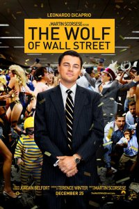
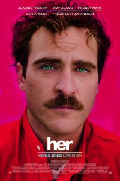

Escape
Tough and chiseled Ray Breslin (Sylvester Stallone) knows how to infiltrate a prison -- and bust out of one. His latest job leads to a double-cross, leaving him stuck in a high-tech facility with the worst that society has to offer. Luckily for Ray, he meets Emil Rottmayer (Arnold Schwarzenegger), an inmate who secretly helps him hatch a plot to win his freedom. Only sadistic warden Hobbes (Jim Caviezel) stands in the way of the two men successfully making it out alive.
Thor: the Dark World
In ancient times, the gods of Asgard fought and won a war against an evil race known as the Dark Elves. The survivors were neutralized, and their ultimate weapon -- the Aether -- was buried in a secret location. Hundreds of years later, Jane Foster (Natalie Portman) finds the Aether and becomes its host, forcing Thor (Chris Hemsworth) to bring her to Asgard before Dark Elf Malekith (Christopher Eccleston) captures her and uses the weapon to destroy the Nine Realms -- including Earth.
Catching Fire
After arriving safely home from their unprecedented victory in the 74th Annual Hunger Games, Katniss (Jennifer Lawrence) and Peeta (Josh Hutcherson) discover that they must do a quick turnaround and begin a Victors Tour. As she and Peeta travel throughout the districts, Katniss senses a rebellion is stirring. However, President Snow (Donald Sutherland) proves that he is still in control when word comes of a cruel change in the rules for the upcoming 75th Hunger Games.
American Hustle

Irving Rosenfeld (Christian Bale) dabbles in forgery and loan-sharking, but when he falls for fellow grifter Sydney Prosser (Amy Adams), things change in a big way. Caught red-handed by FBI agent Richie DiMaso (Bradley Cooper), Irv and Sydney are forced to work under cover as part of DiMaso's sting operation to nail a New Jersey mayor (Jeremy Renner). Meanwhile, Irv's jealous wife (Jennifer Lawrence) may be the one to bring everyone's world crashing down. Based on the 1970s Abscam case.
3 Days to Kill
Facing a terminal disease, spy Ethan Renner (Kevin Costner) has decided to give up his dangerous, high-stakes life in order to rebuild his relationship with his estranged wife and daughter (Hailee Steinfeld), whom he previously pushed away to keep them out of harm's way. However, in exchange for a potentially lifesaving drug, he must complete one final mission: apprehend one of the world's most ruthless terrorists while looking after his teenage offspring in her mother's absence.
Ender's Game
When hostile aliens called the Formics attack Earth, only the legendary heroics of Mazer Rackham (Ben Kingsley) manage to attain a victory. To prepare for the next attack, Col. Hyrum Graff (Harrison Ford) and his cohorts initiate a military program to find the next Mazer. Recruit Ender Wiggin (Asa Butterfield) exhibits an unusual gift for the training, easily mastering all of the challenges thrown at him. Mazer Rackham, himself, takes Ender as a protege to prepare him for the oncoming war.
The Book Theif
In 1938, young orphan Liesel (Sophie Nélisse) arrives at the home of her new foster parents, Hans (Geoffrey Rush) and Rosa (Emily Watson). When Hans, a kindly housepainter, learns that Liesel cannot read, he teaches the child the wonders of the written language. Liesel grows to love books, even rescuing one from a Nazi bonfire. Though Liesel's new family barely scrape by, their situation becomes even more precarious when they secretly shelter a Jewish boy whose father once saved Hans' life.
Gravity
Dr. Ryan Stone (Sandra Bullock) is a medical engineer on her first shuttle mission. Her commander is veteran astronaut Matt Kowalsky (George Clooney), helming his last flight before retirement. Then, during a routine space walk by the pair, disaster strikes: The shuttle is destroyed, leaving Ryan and Matt stranded in deep space with no link to Earth and no hope of rescue. As fear turns to panic, they realize that the only way home may be to venture further into space.
Justin Bieber's Believe
Filmmaker Jon M. Chu moves beyond the spotlight and the attention-grabbing headlines to give pop superstar Justin Bieber a chance to tell his own story. New interviews with the teenage phenomenon reveal long-awaited answers about his passion for making music, his relationships, and coming of age in the public eye. Chu also includes new concert footage, behind-the-scenes access, and special appearances by manager Scooter Braun, and singers Usher, Ludacris and others.
Dallas Buyers Club
In mid-1980s Texas, electrician Ron Woodroof (Matthew McConaughey) is stunned to learn that he has AIDS. Though told that he has just 30 days left to live, Woodroof refuses to give in to despair. He seeks out alternative therapies and smuggles unapproved drugs into the U.S. from wherever he can find them. Woodroof joins forces with a fellow AIDS patient (Jared Leto) and begins selling the treatments to the growing number of people who can't wait for the medical establishment to save them.
The Wolf of Wall Street
In 1987, Jordan Belfort (Leonardo DiCaprio) takes an entry-level job at a Wall Street brokerage firm. By the early 1990s, while still in his 20s, Belfort founds his own firm, Stratton Oakmont. Together with his trusted lieutenant (Jonah Hill) and a merry band of brokers, Belfort makes a huge fortune by defrauding wealthy investors out of millions. However, while Belfort and his cronies partake in a hedonistic brew of sex, drugs and thrills, the SEC and the FBI close in on his empire of excess.
The Secret Life of Walter Mitty
Walter Mitty (Ben Stiller), an employee at Life magazine, spends day after monotonous day developing photos for the publication. To escape the tedium, Walter inhabits a world of exciting daydreams in which he is the undeniable hero. Walter fancies a fellow employee named Cheryl (Kristen Wiig) and would love to date her, but he feels unworthy. However, he gets a chance to have a real adventure when Life's new owners send him on a mission to obtain the perfect photo for the final print issue.
Her
A sensitive and soulful man earns a living by writing personal letters for other people. Left heartbroken after his marriage ends, Theodore (Joaquin Phoenix) becomes fascinated with a new operating system which reportedly develops into an intuitive and unique entity in its own right. He starts the program and meets "Samantha" (Scarlett Johansson), whose bright voice reveals a sensitive, playful personality. Though "friends" initially, the relationship soon deepens into love.
That Awkward Moment
Best pals Jason (Zac Efron) and Daniel (Miles Teller) indulge in casual flings and revel in their carefree, unattached lives. After learning that the marriage of their friend Mikey (Michael B. Jordan) is over, they gladly welcome him back into their circle. The three young men make a pact to have fun and avoid commitment. However, when all three find themselves involved in serious relationships, they must keep their romances secret from one another.
Frozen
When their kingdom becomes trapped in perpetual winter, fearless Anna (Kristen Bell) joins forces with mountaineer Kristoff (Jonathan Groff) and his reindeer sidekick to find Anna's sister, the Snow Queen Elsa (Idina Menzel), to break her icy spell. Although their epic journey leads them to encounters with mystical trolls, a comedic snowman (Josh Gad), harsh conditions, and magic at every turn, Anna and Kristoff bravely push onward in a race to save their kingdom from winter's cold grip.
Insidious: Chapter 2
Soon after their showdown with evil spirits that possessed their son, the Lamberts, Renai (Rose Byrne) and Josh (Patrick Wilson), are ready for their lives to return to normal. However, something still is seriously off, especially with Josh, who -- unbeknown to Renai -- is possessed too. In order to free Josh's soul and finally defeat the malevolent forces around them, Lorraine Lambert (Barbara Hershey) and her ghost-hunting friends investigate the past to save her family's future.